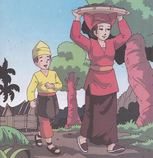
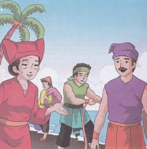
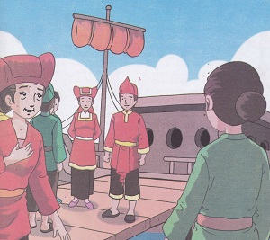
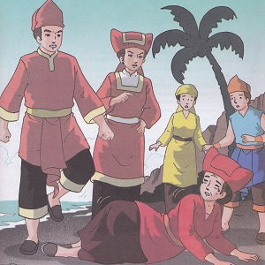
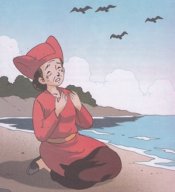
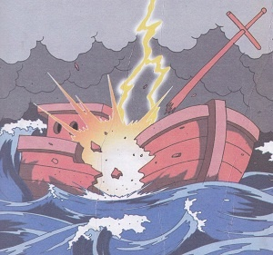
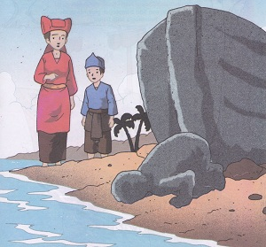

Malin Kundang
(cerita rakyat Sumatera Barat)
Dahulu kala di Padang Sumatera Barat tepatnya di perkampungan Air Manis tinggal seorang perempuan bernama Mande Rubayah. Ia memnpunyai anak laki-laki bernama malin kundang. Ayahnya sudah lama meninggal ketika dia masih kecil. Dalam memenuhi kehidupan sehari-hari Ibunya berdagang kue keliling kampung.
Ketika sudah dewasa, Malin kundang berpamit kepada ibunya untuk pergi merantau. Pada saat itu memang ada kapal besar yang merapat di Pantai Air Manis. Meski dengan berat hati ibunya pun mengijinkan anaknya pergi.
Hari-hari berlalu tersa lambat bagi Mande Rubayah. Setiap pagi dan sore ia selalu pergi ke pantai. Dia melihat ke laut, apabila ada ombak besar, dadanya selalu berdebar-debar. Ia mengangkat tangannya dan berdoa agar anaknya selamat dalam pelayaran. Apabila ada setiap kapal yang merapat di Pantai Air Manis, Mande Rubayah selalu menanyakan kabar tentang anaknya. Tetapi semua awak kapal dan nahkoda tidak mengetahui kabar Malin kundang anaknya.
Harapan Mande Rubayah ingin bertemu dengan anaknya terkabul. Pada suatu hari yang cerah ada sebuah kapal besar yang merapat di Pantai Air Manis. Mande Rubayah dan orang-orang kampung berkumpul menyambut kedatangan kapal itu. Mereka mengira pemilik kapal itu adalah seorang bangsawan yang kaya raya. Sepasang muda-mudi sangat senang atas penyambutan masyarakat setempat. Mande Rubayah yakin bahwa lelaki muda tampan itu adalah anak kesayanagannya Malin kundang.
Malin kundang kaget seketika, karena dirinya dipeluk oleh seorang wanita tua renta yang mengaku ibunya. Tiba-tiba istri Malin kundang meludahi wajah wanita tua itu yang memeluk suaminya. Karena malu dengan istrinya Malin kundang mendorong ibunya hingga terguling ke pasir. Mande Rubayah berusaha memeluk kaki Malin kundang anaknya. Tetapi rasa malu kepada istrinya telah menghinggapi diri Malin kundang, dia begitu tega menendang wanita tua itu dengan kakinya. Seketika wanita tua itu terpelanting dan pingsan.
Ketika ia sadar, Pantai Air Manis sudah sepi. Dia melihat kapal Malin kundang sudah berlayar kembali. Hatinya sakit atas perbuatan anaknya. Ia pun segera mengangkat tangannya dan berdoa “Ya, Allah Yang Maha Kuasa, jika dia bukan anakku, aku maafkan perbuatannya tadi. Tapi kalau memang dia anakku, Malin kundang, aku mohon keadilan-Mu, Ya Rabbi.”
Tidak lama kemudian, cuaca ditengah laut yang tadinya cerah mendadak berubah menjadi gelap. Hujan pun tiba-tiba turun dengan derasnya. Entah bagaimana awalnya tiba-tiba datanglah badai besar menghantam kapal Malin kundang. Disusul sambaran petir yang menggelegar. Seketika kapal itu pun hancur terpecah belah.
Ketika matahari pagi memencarkan sinarnya, badai telah reda. Di kaki bukit terlihat kepingan kapal yang menjadi batu. Itulah kapal Malin kundang. Tak jauh dari tempat itu nampak sebongkah batu yang menyerupai tubuh manusia sedang bersujud. Masyarakat sekitar setempat menyakini bahwa batu itu adalah tubuh Malin kundang anak durhaka yang dikutuk ibunya.